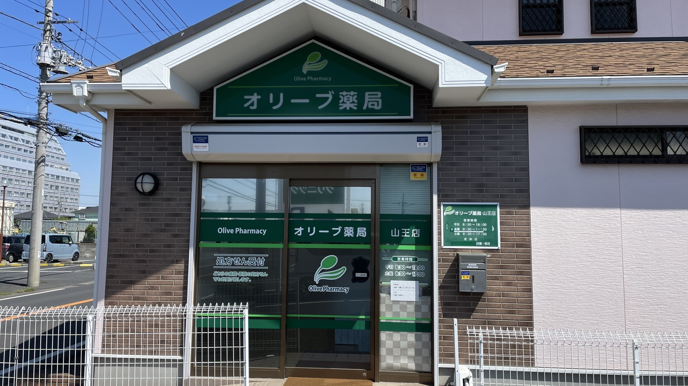
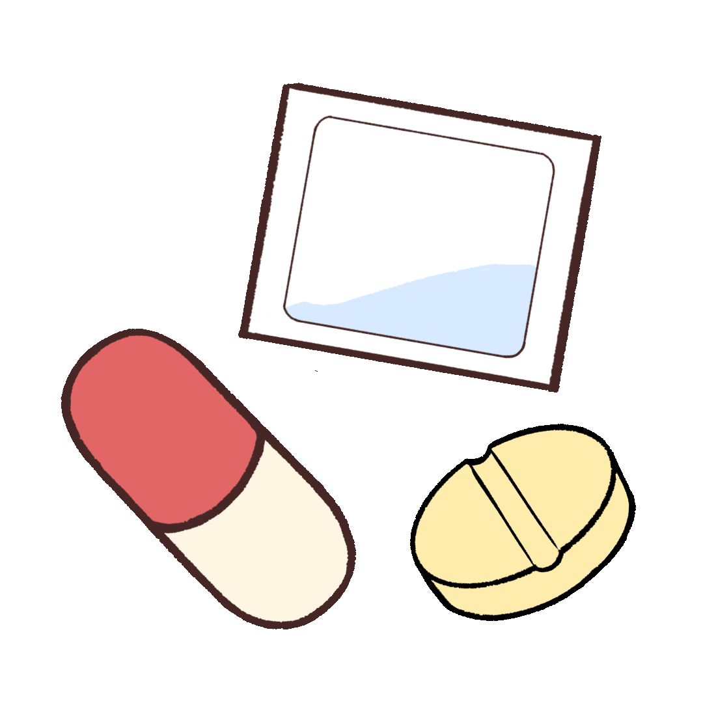

オリーブ薬局山王店のホームページへようこそ！

| 営業時間：月・火・木・土：8:30〜18:00 水・金：8:30〜16:30 |
| 定休日：日曜・祝日 |
| 所在地：千葉県千葉市稲毛区山王町138-4 |
| 電話番号：043-421-7466 |
| FAX番号：043-421-7467 |
オリーブ薬局山王店では、患者様の立場に立った親身な対応を心掛け、
地域に根ざした薬局をスタッフ一丸となって取り組んでおります。

お薬服用のサポート- 一包化・お薬カレンダーへのセットに対応しています
- 継続して服用しているお薬は事前注文が可能です。あらかじめお薬の内容を教えていただければ、事前にご準備しておきます
- ご自宅までの配送・郵送にも対応しています
服薬指導へのこだわり
「スピード」と「やさしさ」と「丁寧さ」を大切にしています。お待たせしないスムーズなお渡しと、お一人おひとりに合わせた丁寧な説明を心掛けています。
在宅医療への対応実績
介護保険をお持ちの方は在宅医療への移行もご相談いただけます。
介護保険をお持ちでない方でも、主治医師とご相談の上、医療保険を使用しておくすりをご自宅までお届けすることが可能です。
現在、グループホーム6施設、個人在宅3件に対応しております（2026年7月現在）
まだまだ少ないですが、今後はより一層、みなさまのお役に立てるよう努めてまいります。
無料専用駐車場あり（正面15台・裏5台）
京成バス「山王町」バス停下車 徒歩1分
（JR稲毛駅・西千葉駅よりバスをご利用ください）
介護施設・グループホームの皆様へ
オリーブ薬局山王店では、施設様への訪問服薬指導・お薬のお届けは、介護保険、医療保険内で賄うため、別途郵送、配送料はかかりません。
新規のご相談も承っておりますので、お気軽にお問い合わせください。
施設様ごとのルールに従い効率的な配薬を心がけます。
対応可能な施設形態
特別養護老人ホーム、介護老人保健施設、グループホーム、サービス付き高齢者向け住宅など、施設形態を問わずすべて対応可能です。
訪問可能エリア
千葉市を中心に、八千代市・佐倉市など、当薬局から10km圏内のエリアに対応しております。
実績
グループホーム6施設、個人在宅3件への対応実績がございます。
お問い合わせ
| お電話 | 043-421-7466 |
|---|---|
| 受付時間 | 月・火・木・土：8:30〜18:00 水・金：8:30〜16:30（日曜・祝日を除く） |
Q&A
Q. どこの処方箋を持っていっても大丈夫？
A. 初回は在庫の関係でおまたせするかもしれませんが、2回目以降はスムーズにお渡しすることができます。
A. 初回は在庫の関係でおまたせするかもしれませんが、2回目以降はスムーズにお渡しすることができます。
Q. 家にまで届けてほしいんだけど…
A. 送料をいただければ、郵送で対応することも可能です。
介護保険をお持ちであれば在宅医療へ移行することも可能です。
A. 送料をいただければ、郵送で対応することも可能です。
介護保険をお持ちであれば在宅医療へ移行することも可能です。
Q. 一包化やお薬カレンダーへのセットはお願いできますか？
A. 対応可能です。飲み忘れが心配な方はお気軽にご相談ください。
A. 対応可能です。飲み忘れが心配な方はお気軽にご相談ください。
Q. いつも飲んでいるお薬を、来局前に準備しておいてもらうことはできますか？
A. 可能です。継続して服用しているお薬であれば事前注文ができますので、あらかじめお薬の内容をお電話等で教えてください。事前にご準備した状態でお待ちします。
A. 可能です。継続して服用しているお薬であれば事前注文ができますので、あらかじめお薬の内容をお電話等で教えてください。事前にご準備した状態でお待ちします。
Q. 他の病院・クリニックでもらっているお薬と一緒に管理してもらえますか？
A. 可能です。お薬手帳を活用して、他院処方のお薬も含めて一元的に管理し、飲み合わせのチェックを行っています。かかりつけ薬局としてぜひご利用ください。
A. 可能です。お薬手帳を活用して、他院処方のお薬も含めて一元的に管理し、飲み合わせのチェックを行っています。かかりつけ薬局としてぜひご利用ください。
Q. 薬が余ってしまっている（残薬がある）のですが、調整してもらえますか？
A. 可能です。残薬の状況をお伺いした上で、処方医と相談しながら次回の処方日数を調整するなどの対応をいたします。お薬が余っている場合はお気軽にお持ちください。
A. 可能です。残薬の状況をお伺いした上で、処方医と相談しながら次回の処方日数を調整するなどの対応をいたします。お薬が余っている場合はお気軽にお持ちください。
Q. いつも同じ薬局に行った方がよいのでしょうか？
A. はい。複数の医療機関から処方された薬の重複や飲み合わせのチェック、薬の副作用歴の一元管理ができるため、より安全で効果的な治療につながります。
A. はい。複数の医療機関から処方された薬の重複や飲み合わせのチェック、薬の副作用歴の一元管理ができるため、より安全で効果的な治療につながります。
Q. 薬の受け取りは本人でなければだめですか？
A. いいえ。ご家族などの代理の方でもお薬を受け取ることが可能です。その際、患者さまの保険証やお薬手帳をお持ちいただくと、よりスムーズな対応ができます。
A. いいえ。ご家族などの代理の方でもお薬を受け取ることが可能です。その際、患者さまの保険証やお薬手帳をお持ちいただくと、よりスムーズな対応ができます。
Q. 以前にもらった薬が余っています。どうすればよいですか？
A. 余っているお薬（残薬）がある場合は、次回の診察時に医師に伝えるか、薬局にお持ちください。薬剤師が残薬を確認し、処方日数を調整することで、お薬の無駄をなくし、医療費の節約にもつながります。
A. 余っているお薬（残薬）がある場合は、次回の診察時に医師に伝えるか、薬局にお持ちください。薬剤師が残薬を確認し、処方日数を調整することで、お薬の無駄をなくし、医療費の節約にもつながります。
Q. お薬手帳は持っていった方がよいですか？
A. はい。お薬手帳は、患者さまが使っている薬の情報を記録する大切なものです。複数の医療機関を受診した際の薬の重複や、危険な飲み合わせを防ぐために不可欠です。また、災害時や旅行先で体調を崩した際にも、あなたの情報を正確に伝えることができます。料金も多少安くなります。
A. はい。お薬手帳は、患者さまが使っている薬の情報を記録する大切なものです。複数の医療機関を受診した際の薬の重複や、危険な飲み合わせを防ぐために不可欠です。また、災害時や旅行先で体調を崩した際にも、あなたの情報を正確に伝えることができます。料金も多少安くなります。
施設基準・算定状況に関する事項
1. 施設基準・算定状況に関する事項
- 調剤基本料：調剤基本料１
- 地域支援体制加算2
- 連携強化加算
- 在宅薬学総合体制加算１
- 調剤ベースアップ評価料
2.患者様への対応・保険に関する事項
- 取扱保険：健康保険法・国民健康保険法・後期高齢者医療制度
- 取扱公費負担医療：生活保護法・労災保険・指定難病・小児慢性特定疾病・その他
- 個別の調剤報酬算定項目が分かる明細書：無料発行しています
- 時間外・夜間休日等の対応体制：有（加算算定：有）
- 長期収載品の選定療養（後発品がある先発品を希望される場合の自己負担）：対応しています
3. その他（薬機法・医療法関連）
- 認定薬局：該当なし
- 個人情報の取扱い（利用目的等）：調剤のみに使用いたします
- 療養の給付と直接関係ないサービス等の実費：お薬の郵送料 実費／容器代 無し
最終更新日：令和８年７月８日